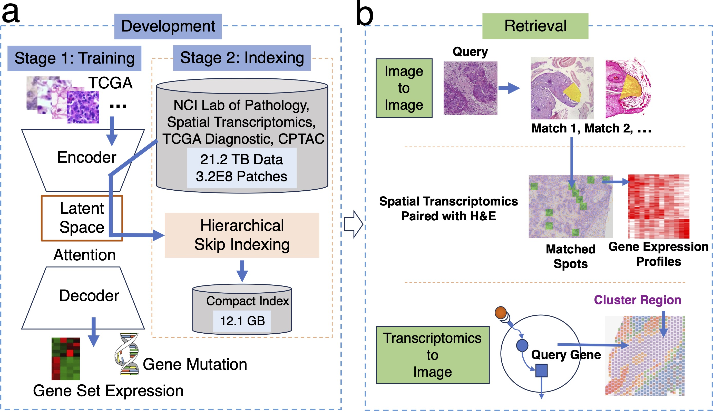

Hematoxylin & Eosin Retrieval Engine
Hematoxylin and Eosin staining (H&E) is widely used in clinical practice,
but efficient and versatile Google-like image retrieval tools are lacking.
We developed the H&E Retrieval Engine (HERE) to analyze patient cases based on image similarities to database records.
Using H&E image regions as input, HERE searches 21.2 terabytes of whole-slide images from multiple tumor histopathology
cohorts through a 12.1-gigabyte memory index, and returns top images containing regions similar to the query.
HERE scans high-resolution images in the database using accurate artificial intelligence encoding and ultra-efficient
hierarchical skip indexing. HERE demonstrated performance superior to existing image retrieval tools based on blinded
pathologist scoring using benchmark queries that represent key image features of human tumors.
By pairing spatial transcriptomics with H&E images, HERE also enables retrieving image features from gene
transcriptomics input and identifies molecular pathways associated with tumor histologies.
The HERE framework comprises two modules: Development and Retrieval.

- Model training: Stage 1 trains a prediction model composed of an image encoder, attention map, and decoder using TCGA data from 32 tumor types. The input to the image encoder is H&E whole-slide images, and the decoder output includes a binary indication of gene mutation functions in cancer progression and average expression of pathway gene sets.
- Index generation: Stage 2 indexes patch vectors encoded from the whole slide images from the NCI Lab of Pathology, TCGA, CPTAC, and spatial transcriptomics studies.
- For a query H&E image patch or region, the Image-to-Image retrieval returns similar image patches and associated whole slides from the indexed database. If users select images with spatial transcriptomics (ST) data, HERE returns images that closely match the query and the corresponding gene expression profiles from ST detection spots.
- The Transcriptomics-to-Image retrieval finds H&E slides with paired ST data where the query gene has high expression levels in ST detection spots associated with specific image feature clusters from those slides.